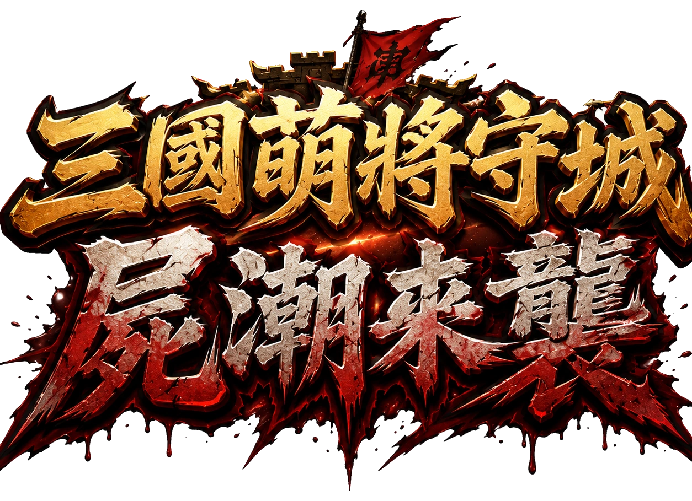
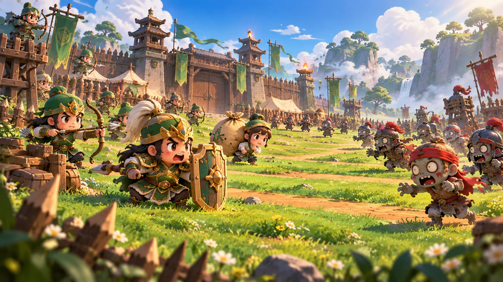
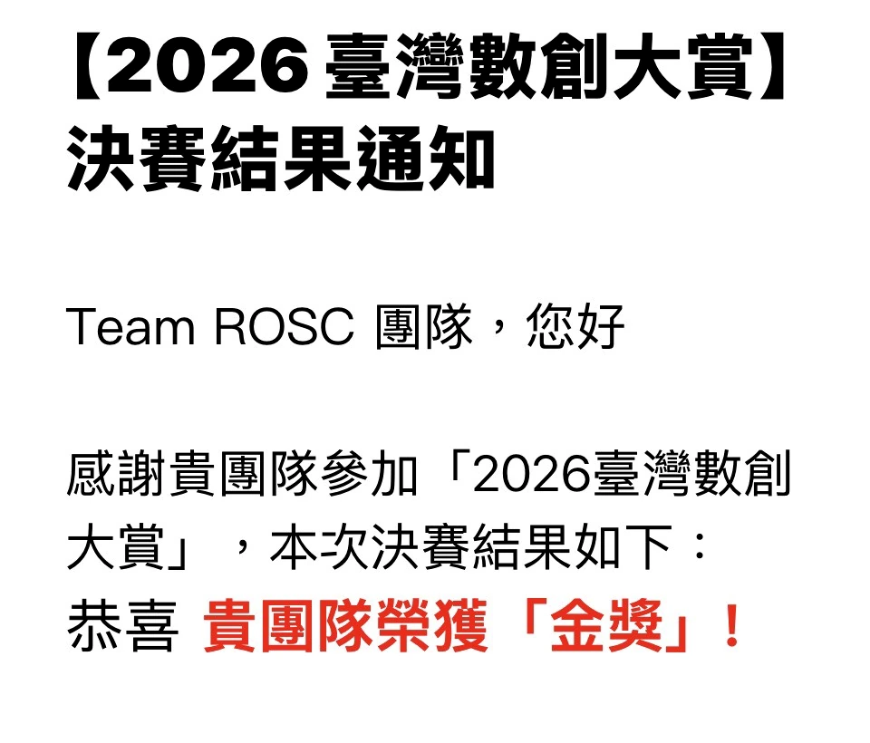

01
不會寫程式
有玩法構想，卻不知道怎麼把它變成可以操作的產品。
AI 時代，最值錢的是把想法變成結果的人
從孩子的遊戲構想，到企業的 ISO 管理系統：創意、整合與新時代的槓桿。


不是想法不好，而是第一步太昂貴。
有玩法構想，卻不知道怎麼把它變成可以操作的產品。
企劃、美術、程式與測試，任何一環都可能讓計畫停下。
還沒證明有人想玩，就必須先投入大量時間與金錢。
等長大、等學會、等有錢、等有人幫忙，最後沒有開始。
大夢想不拆解，只會讓人覺得遙遠。
速度可以交給工具，方向與責任仍然在人。
我只是多推了他們一步。

一個網站、一套課程、一個工具、一項服務，或是一門新的生意。
領域不同，實現想法的路徑其實相同。
真正的痛點，不是缺少功能，也不是沒有文件。
後面該由誰處理、何時完成，不需要再靠人一個一個追。
把週期設定好，例行工作就能按時被啟動。
依照每月、每季或每年的排程，自動啟動工作。
系統指定負責人、期限與應完成的檢查項目。
照著工單執行、填寫結果並附上必要的證據。
完成狀態與證據被保存，下一個週期再自動開始。
不是跟 AI 比誰記得更多，而是做 AI 無法替你負責的事。
別人只覺得麻煩，你看得出哪裡可以變成更好的流程。
找到價值找出真正的使用情境、限制、完成條件與優先順序。
問對問題把 Know-how、使用流程與技術翻譯成共同語言。
連起資源知道什麼是完成、哪裡可能出錯，以及誰必須確認。
做出結果槓桿，就是讓成果不再只受限於自己的時間。
找人一起做、投入資源加快速度，或把一次完成的成果交給系統重複運作。
槓桿不替你決定方向，它只會把方向放大。
透過分工、溝通與團隊合作，讓成果不再只靠一個人完成。
購買人才、設備、通路與試錯空間，讓正確方向更快發生。
把方法變成系統，即使你不在現場，事情仍能按照流程持續完成。
做出工具只是開始；可以被反覆使用，槓桿才真正發生。
做一次，之後可以反覆玩、持續修改，也能分享給更多人。
顧問不在現場，系統仍能提醒、追蹤、通知並保存可稽核的紀錄。
尤其降低了打造系統槓桿的門檻。
表達的價值，是讓不同的人理解同一個問題，並願意一起行動。
當成員又來自不同產業，表達能力就能把分散的 Know-how 連成新的產品與服務。
一個流程、一項服務、一個工具，或一個可以操作的原型。
先從你每天真的看得到的問題開始。
你的工作經驗、判斷方法與產業知識，就是素材。
不要等完整，先讓想法有機會被看見、使用與驗證。